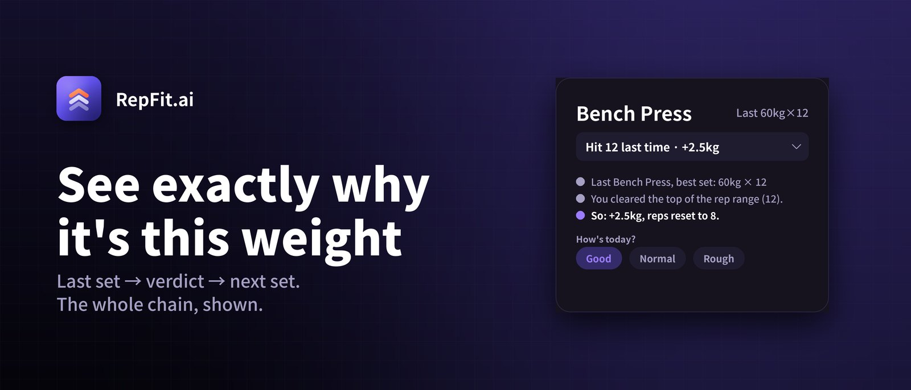

RepFit.ai
For the lifter · version 1.3
- Why this weight. Tap the prescribed load and the chain unfolds: last set, verdict, decision. No language model — the logic is deterministic double progression, which is exactly why it can be shown.
- One-tap override. Good / Normal / Rough. Sleep and stress move strength and no log can see them, so the coach adjusts instead of arguing.
- Rest on the Lock Screen. A Live Activity carries the countdown and the next set's numbers, so the phone stays in a pocket between sets. Workouts write to Apple Health.